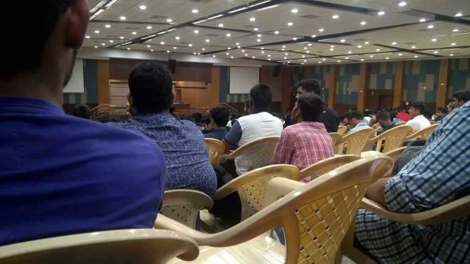
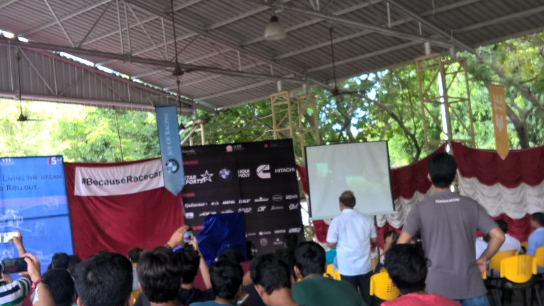
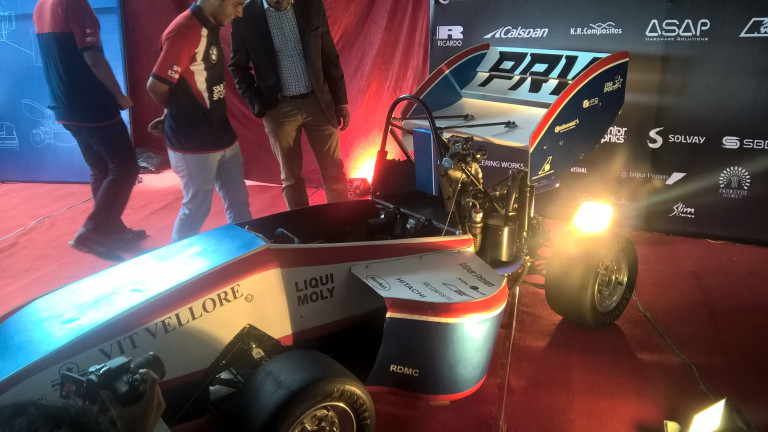
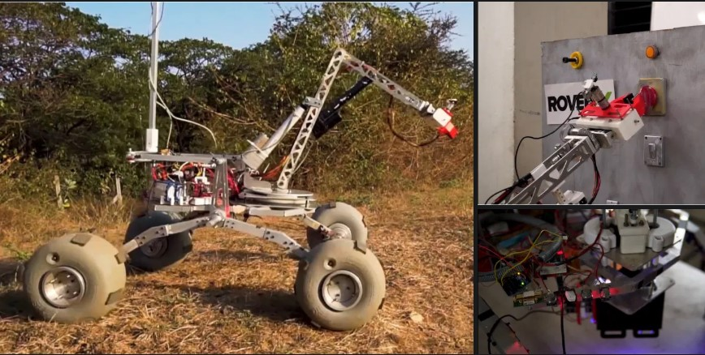
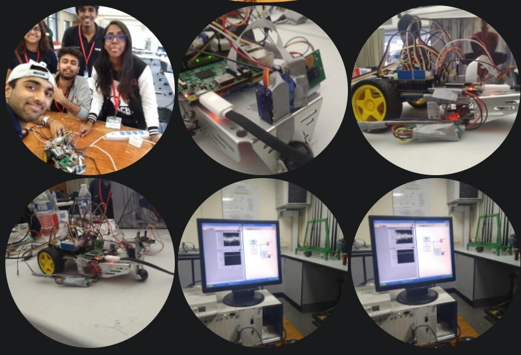

There are so many things which affects us to be the person we are today,
We can take many decisions about ourselves based on the outcomes
observed and we get molded by time, but environment plays a very
important role in molding ourselves, we see around observe things and
then modify ourselves accordingly to be the very best versions of
ourselves.
Similarly, as an engineering students, we go through many events,
conferences, contests etc. which helps us to identify the field of
application of whatever we learn in our classes or labs. Apart from them,
we also become parts of some talks, social events, NGO involvement which
also allows us to be part of the society and not isolated from it as
those things are also important elements of life. Here are some of the
memories, I made as a student in the events I participated, I hope you
will find them interesting.
So speaking about my engineering career, It all started from my first
year at vellore Institute of Technology. Before joining the college,
I was a bookworm and theoretical bug and would have never thought of
applying all what I knew to the practical world.

So this was the orientation day, seeing so many students coming from
far by places here to study was one of the motivation for me as well
to do well here. I was excited as well as scared at the same time.
And here we go:

This was the first racing car expo in our college, this was
something which just turned my senses to begin with doing something
practical and turned things around for me. Here is what they made:

You can check them out here: Pravega Racing team
After all this, I joined a space
robotics exploration
team: Team RoverX.
I was always passionate about space science and Exploration,
and after joining RoverX this interest got a direction, I worked almost
2.5 years designing mechanical subsystems, and instrumental architecture
of a rover to explore a Martian like atmosphere in search of its geology,
geography and astrobiology.

Apart from all this, I have been part of many other events, such as
NASA space apps, HoneyWell WeHack 2.0 (As an student organizer), LVPEI
eye care hackathon, ASME design challenge, ASME Mechanical conference,
ASME Asia pacific E-fest, University Rover Challenge (2018 &
2019 edition), Summer BioFest, Indian Rover Challenge,
Aakruti Design Innovation challenge, HackHarvard 2018 etc.
Here are the images of some of those beautiful memories I made,
by being part of such events.
